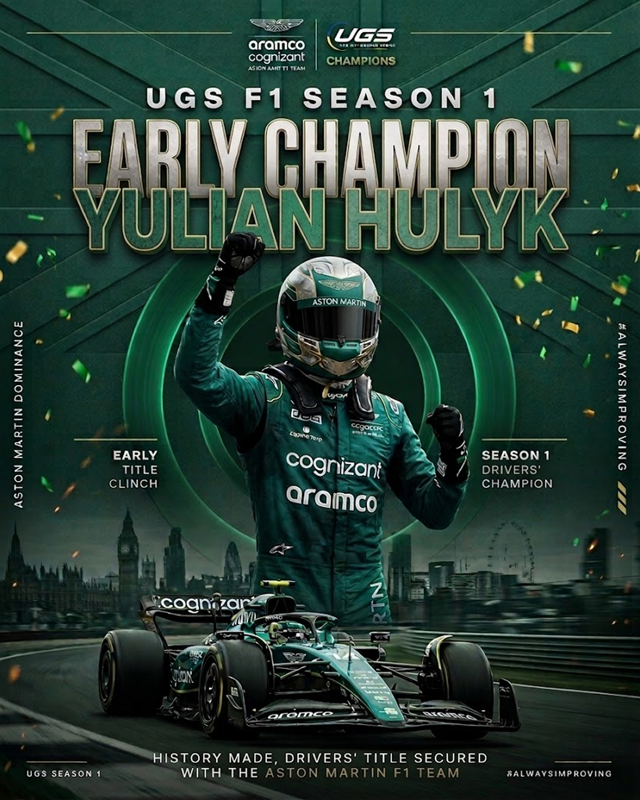
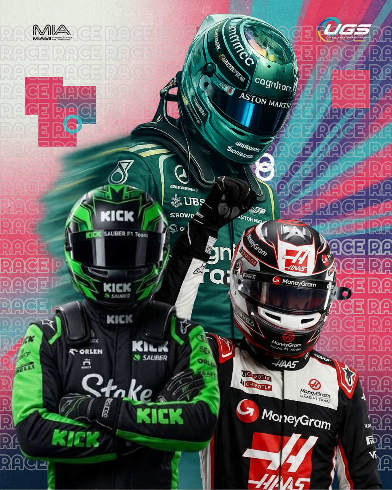

Championship • Season 15 Вересня 2026 | World Champion

Championship • Season 1
Stage 10 • Miami, USA
Десятий етап сезону UGS F1 завершився в американському Маямі, подарувавши вболівальникам насичений гоночний вікенд із боротьбою за позиції, яскравими обгонами, численними інцидентами та важливими рішеннями стюардів. За сонячної погоди пілоти вийшли на старт основної гонки, яка складалася з 57 кіл, а головною дійовою особою американського етапу став Yulian HULYK.
Пілот Aston Martin провів практично ідеальний вікенд. HULYK розпочав основну гонку з Pole Position, здобутої з результатом 1:25.533, а вже за 57 кіл перетворив старт із першої позиції на впевнену перемогу. Додатково пілот встановив найшвидше коло гонки — 1:27.503, таким чином забравши одразу всі три ключові досягнення етапу: Pole Position, перемогу та Fastest Lap.
Ще до старту основної гонки стало зрозуміло, що боротьба в Маямі буде надзвичайно щільною. HULYK випередив другого пілота кваліфікації, Yaroslav LOBODA з Alpine, на 0.469 секунди. Третім став ще один представник Alpine — Yaroslav PANKRATOV, який поступився лідеру 0.651 секунди. При цьому різниця між першим та десятим місцем склала лише 1.663 секунди, що вкотре продемонструвало високий рівень конкуренції в пелотоні UGS F1.
У самій гонці HULYK із самого початку отримав можливість контролювати ситуацію попереду. Aston Martin поступово створив комфортний відрив, тоді як основна боротьба перемістилася за місця позаду лідера. Volodymyr SHAKULA на Kick Sauber зміг провести стабільний заїзд і посів друге місце, завершивши гонку за 14.268 секунди позаду переможця.
Однак головною сенсацією подіуму став Hlib BRATUS. Пілот Haas F1 Team фінішував третім із відставанням 15.293 секунди, принісши своїй команді перший подіум у сезоні UGS F1. Для Haas цей результат став особливо важливим, адже команда нарешті змогла піднятися на подіум на десятому етапі чемпіонату. BRATUS провів стабільну гонку та скористався можливістю поборотися за топ-3 до самого фінішу.
Четвертим фінішував Yevhenii PANCHENKO на Mercedes. Alpine після сильної кваліфікації також зуміла завершити гонку двома болідами в першій шістці: Yaroslav LOBODA посів п'яте місце, а Yaroslav PANKRATOV — шосте. Далі фінішували Rostyslav PYLYAK на Ferrari, Stanislav MARCHENKO на Haas, Ivan KOBRYN на McLaren та Maksym KHODAKIVSKYI на Williams.
Поки на вершині пелотону HULYK впевнено контролював гонку, в інших групах боротьба була значно напруженішою. Це призвело до кількох інцидентів, які після фінішу довелося розглянути стюардам.
Одним із найбільш помітних учасників розглядів став Nazarii PETRIV із Racing Bulls. Уже на першому колі під час боротьби перед першим поворотом пілот спробував випередити Haas. У процесі проходження повороту Racing Bulls здійснив різку зміну траєкторії, після чого відбувся контакт. Haas влучив у заднє колесо Racing Bulls, а його переднє антикрило отримало пошкодження. Стюарди встановили, що PETRIV не залишив супернику достатньо безпечного простору для проходження повороту. За цей епізод пілот Racing Bulls отримав +10 секунд та 1 Penalty Point.
Для PETRIV проблеми на цьому не завершилися. У 17-му повороті відбувся ще один серйозний контакт — цього разу з Kick Sauber. Пілот Racing Bulls не розрахував точку гальмування та допустив сильне зіткнення. Унаслідок контакту болід Kick Sauber отримав значне пошкодження переднього антикрила, що негативно вплинуло на його подальший темп. Стюарди визнали, що PETRIV не забезпечив належного контролю над болідом під час гальмування та безпосередньо спричинив зіткнення. Покаранням стали +30 секунд та 3 Penalty Points.
Таким чином, лише за два окремі гоночні епізоди PETRIV отримав загалом +40 секунд та 4 Penalty Points.
Водночас не кожен контакт на трасі завершувався покаранням. На першому колі у третьому повороті пілот Williams, рухаючись позаду Racing Bulls, незначно не розрахував гальмівний шлях та допустив легкий контакт. Проте ситуація не призвела до серйозних наслідків: жоден із болідів не отримав пошкоджень, не було розвороту або суттєвої втрати позицій. Після розгляду епізоду стюарди не знайшли достатніх підстав для санкції та класифікували ситуацію як Racing Incident.
Ще один серйозний епізод стався на 20-му колі у 14-му повороті. Пілот Mercedes Maksym FILIPOV здійснював атаку на Williams, намагаючись пройти між Williams та Racing Bulls. Під час виконання маневру Mercedes не розрахував гальмування та допустив контакт із Racing Bulls. У результаті болід Racing Bulls було розвернуто, а його переднє антикрило отримало пошкодження. Стюарди встановили, що FILIPOV не забезпечив безпечного виконання атаки та не врахував присутність іншого боліда на траєкторії. Рішенням стюардів стали +10 секунд та 1 Penalty Point для пілота Mercedes.
Окремо після гонки було розглянуто ситуацію із синіми прапорами за участю Racing Bulls. На останній прямій перед фінішним поворотом Nazarii PETRIV, перебуваючи в статусі колового, пропустив швидших пілотів, які наближалися позаду. Попри це, ігрова система автоматично видала Racing Bulls +10 секунд за порушення правил синіх прапорів. Після перегляду епізоду стюарди встановили, що PETRIV своечасно пропустив швидші боліди, не перешкоджав їхньому руху та не здійснював небезпечних маневрів. У зв'язку з цим автоматичний штраф було скасовано, а результат пілота залишився без змін з урахуванням скасування санкції.
Ще один спірний момент стався на першому повороті за участю пілота Alpine. Рухаючись позаду Aston Martin, він залишив межі траси та зрізав поворот, пояснюючи маневр необхідністю уникнути можливого контакту. Однак після перегляду ситуації стюарди встановили, що між болідами залишалося достатньо простору для безпечного гальмування та проходження повороту в межах траси. Ознак неминучого зіткнення, яке змусило б Alpine залишити трасу, встановлено не було. У результаті попередження пілоту Alpine залишилося чинним.
Попри насичену роботу стюардів, головна історія Miami GP залишилася незмінною — домінування Yulian HULYK. Пілот Aston Martin завершив 57-колову гонку з результатом 1:31:17.644, випередивши SHAKULA на 14.268 секунди та BRATUS на 15.293 секунди. Для HULYK це був повний комплект досягнень на одному етапі: Pole Position, перемога та найшвидше коло.
За підсумками гонки четвертим став Yevhenii PANCHENKO, п'ятим — Yaroslav LOBODA, шостим — Yaroslav PANKRATOV. Rostyslav PYLYAK завершив гонку сьомим, Stanislav MARCHENKO — восьмим, а Ivan KOBRYN — дев'ятим. Десяту позицію посів Maksym KHODAKIVSKYI, відставши на одне коло.
Позаду нього фінішували Nazarii PETRIV, Volodymyr MYKHALYUK, Maksym MYKHLYK та Oleksii FEDOTOV. Чотири пілоти не змогли дістатися фінішу: Maksym FILIPOV, Mykhailo ILLIUK, Yaroslav MURCHIK, Stanislav KRICHFALOVSKYI та Olexandr SOPOTYAK завершили етап зі статусом DNF.
Попри два отримані покарання, саме Nazarii PETRIV був обраний Driver of the Day. Пілот Racing Bulls став одним із найбільш помітних учасників етапу, опинившись у центрі одразу кількох гоночних ситуацій та продемонструвавши активну боротьбу протягом дистанції.
Таким чином, Miami GP став одним із найбільш насичених етапів сезону UGS F1. Yulian HULYK продемонстрував абсолютну перевагу та забрав перемогу, Pole Position і Fastest Lap, Volodymyr SHAKULA піднявся на другу сходинку, а Hlib BRATUS приніс Haas F1 Team довгоочікуваний перший подіум сезону.
Десятий етап завершено, але чемпіонат UGS F1 наближається до своєї вирішальної частини. Попереду ще більше боротьби, а кожне очко стає дедалі важливішим.
Маямі залишилося позаду. Наступний етап — попереду. 🏎️🔥